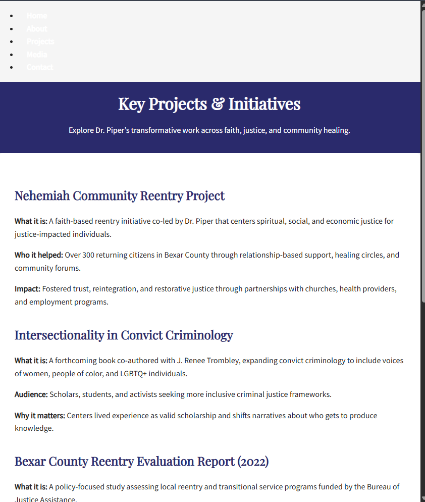
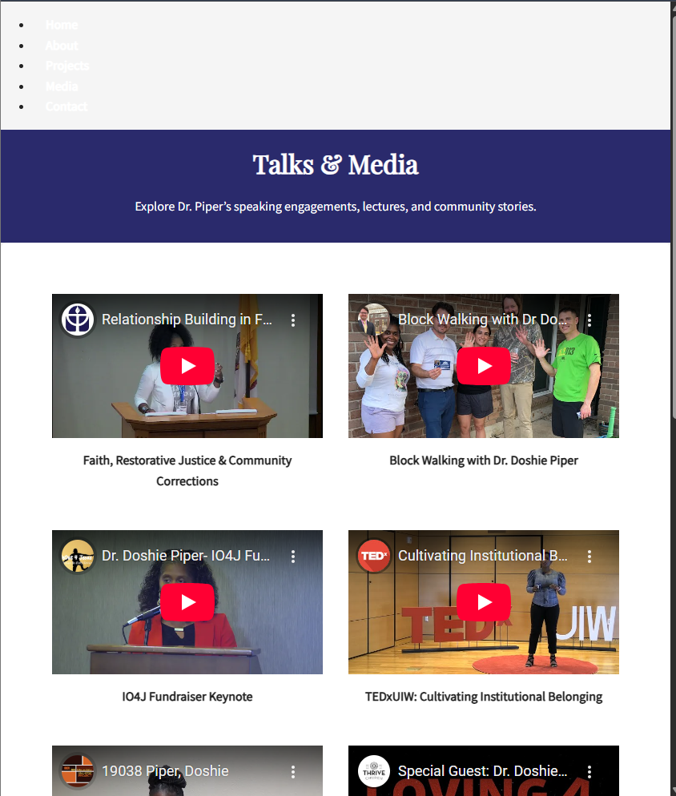
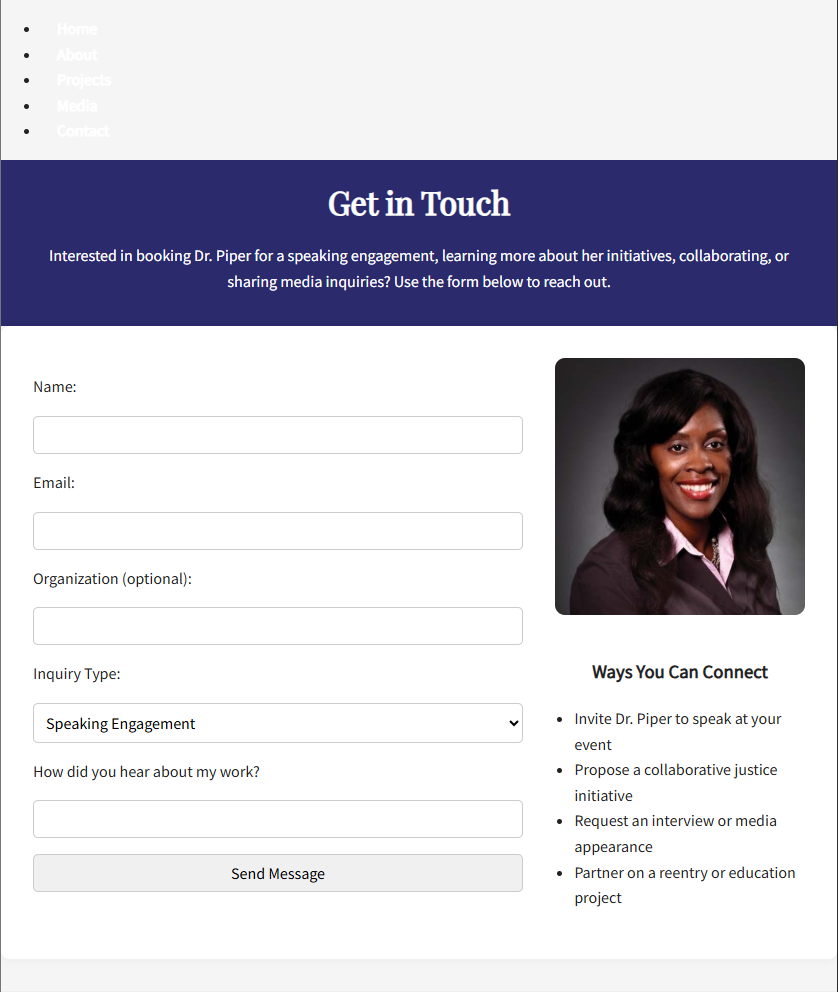

Project Evolution Roadmap
Building in public isn’t about showing off—it’s about learning, refining, and pushing ideas forward. Every project teaches something new, whether it's a small JavaScript tweak or troubleshooting API errors.
🧠 How I Learn with AI, Not from AI
AI is a tool, not a shortcut. It helps with debugging, structuring ideas, and accelerating solutions, but the thinking, logic, and execution come from me.
🛠️ Projects That Taught Me Something
JavaScript Quiz App
A browser quiz using JS and DOM methods. Expanding to include scoreboards and timers.
Marcus Piper Site
A responsive site showing layout, media, and interaction. Built for a course using core HTML/CSS.

Curve SMS Safety App
A backend Node.js + Twilio app that sends SMS alerts to subscribed users. In active development.
🎓 Java School Journey
I’m not just learning from AI—I’m also enrolled in a structured Java course. Here’s what I’ve been building:

Module 3.1 – Reads two integers and outputs their sum, difference, and product.
Rev. Dr. Doshie Piper Site – Before & After
This project showcases the transformation of Dr. Piper’s website from an early concept to a polished professional brand.
Home Page – Before

About Page – Before
Projects Page – Before
Media Page – Before
Contact Page – Before
📌 The "after" images will be added soon once the final polish is complete and screenshots are taken.
🔮 Where It’s Going
Right now, I’m brainstorming an interactive chatbot that doesn’t just answer questions but walks users through my dev journey. Still in the planning phase, but I’m laying out the technical foundation for it!